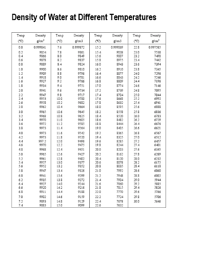

16 Particle Density with Pycnometers
Last edited: 08NOV2023 NP
16.1 Materials
Lab coat
Safety glasses
Oven gloves
Tongs for hot objects
Dessicator filled with Anhydrite
10ml Pycnometers
~2 g of soil (could be more, but this seemed like a good amount - filling the pycnometer too high risks losing soil while boiling)
Measuring scoop
Small metal weigh tins (for moisture correction in the oven)
Oven set at 105C
4-digit analytical balance
Hot/Stir Plate
DI Water
Degassed Water (see instructions below)
Need a flask connected to a vacuum via tygon tubing + rubber stopper
Small stir rod (for use in pyc. while boiling - I found a straightened paper clip worked well)
KimWipes
16.2 Preparation
For accurate calculations, the soil (and pycnometers!) should be oven-dried; otherwise a moisture correction will need to be applied to the weight of the soil. I found that it was time efficient to measure out the soil samples at the same time that you are degassing the water.
Put a large flask (½ full with DI water) on a hot/stir plate and connect it to the lab bench vacuum with tygon tubing. The size of the flask can vary depending on how many samples you are running. A XXX ml flask worked well for me for ~60 samples - you don’t end up using too much of it.
Put a stir rod in the flask and turn the stir setting to 5 while also turning the heat setting on 5. Turn the vacuum on and put a rubber stopper over the opening of the flask (this will become pressurized, so don’t put it on too tight).
Monitor the bubbles in the water of the flask - the water is degassed when NO bubbles can be seen.
Note, the water may not come to a complete boil, and that’s okay. The heat speeds up the process regardless. This process usually takes 2.5-3 hours. Once no bubbles can be seen in the water or on the stir rod, turn off the hot plate and let the flask cool overnight. Turn off the vacuum, but don’t take the tubing or rubber stopper off - this should help to keep air out overnight.
While waiting for the water, you can measure out ~2 g of soil from each sample into a small metal weighing tin. Since there are only 30 pycnometers, it’s only possible to run 30 samples in a day; and I found that 15 at a time is a good number to have on the hot plate.
Record the sample ID and weigh tin number (see the blank data sheet folder for a template) for each sample and put them in the oven (at 105C) at least overnight.
In summary, the night before you plan on running the samples, degassed water should be cooling to room temp, and you should have all your soil samples AND pycnometers drying in the oven.
Key Points - Water should always be de-gassed the same day you are running the samples. Letting it sit for even a few hours adds oxygen back in. - Always double check you are using the correct stopper with the matching pycnometer (they will have the same number on them). The exact weight and volume of each pyc. differs, and the final particle density numbers are super sensitive to these values. -Each time you record the weight of the pycnometer, the stopper should be included.
16.3 Procedure
- Returning to your now-room temp, degassed water, turn the stir setting back on 5 to get rid of any oxygen that has entered the flask overnight. It usually takes ~40 minutes to get rid of all the bubbles again. Do NOT turn the heat back on, you need this water to remain at room temperature. Once the bubbles are gone, remove the flask from the stir plate and pour (carefully, so as to not create more bubbles) into a squeezable water container with a small dispenser.
- While this happens, take your soil samples and pycnometers out of the oven and place in a desiccator til they are cool to the touch (about 10 minutes). Measuring them while too hot will mess with the analytical balance.
- For each sample, weigh the dry pycnometer by itself, and then again with the 2 g of soil. Record both of these weights, along with the pycnometer number (this will be very important later). The metal weigh tins come in handy here, since you can fold them to pour the soil in the pyc. without making too much of a mess.
- Once each pyc has soil in it, use DI water to fill the pyc halfway to its neck. Filling the pyc much higher risks bubbling over while boiling. Stir each sample to make sure all of the soil is saturated.
A note for different textures: coarse textures/sands will pop when heated, put less water in these samples to prevent loss of soil; for organics - 2 g of soil hardly fits in the 10 ml pyc, the most important thing is to not fill the pyc more than ½ way full (regardless if this amounts to <1 g of soil). The organics will also soak up a lot of the water (after mixing - which you will have to do a lot of for these samples) and you may need to add more before placing on the hot plate. Just make sure there is standing water in these samples that is able to boil.
- Arrange 15 pyc on the hot plate so that they can be rearranged. Remove all the stoppers. There will probably be a hotter part of the plate that makes some samples boil faster, make sure each sample gets a chance to heat in this spot. Turn the hot plate to heat setting 4.
- Make sure each sample comes to a rolling boil for 1-2 minutes, and continue to rearrange accordingly. Stir frequently to release air bubbles trapped in soil and to reduce some boiling. A straightened paper clip works well for stirring and moving the pycnometers around.
- Total boiling time takes ~20-30 minutes, including 10+ minutes for the first sample to start boiling. After all the samples have boiled, turn off the hot plate and move the pycnometers to the desiccator. Let cool for approximately 40 minutes or until room temp. If possible, try to weigh the samples when the solution is ~26C (this is the temp that the pyc volumes were weighed at).
- Each pycnometer needs to be filled completely with degassed water after cooling. Remove the stopper and slowly fill the pyc to ~¾ of the way up the neck. Then, place the stopper back on and make sure the water reaches the very top of the capillary. Water can spill over the top and come out the space between the pyc and stopper - this nearly unavoidable. Use kimwipes to clean up any water that spilled out (soak up the water at the top of the pyc first, this will draw down the water in the capillary). Make sure the outside of the pycnometer is totally dry before weighing.
- Record the weight of the pycnometer with soil and water, along with the temperature at time of weighing.
16.4 Calculation
\[ PD = (M_{dry\:pyc} - M_{pyc\:+\:soil}) \over [V_{pyc} - (M_{pyc\:+\:soil\:+\:water} - M_{dry\:pyc} - (M_{pyc\:+\:soil} - M_{dry\:pyc}) / D_{water@temp})] \]
Where:
Dwater@temp is the is the specific density of water at the recorded temperature (use the chart below)
Vpyc is the volume of each pycnometer that has previously been measured (see values below)
M_____ is the respective recorded masses
16.5 References and Notes
